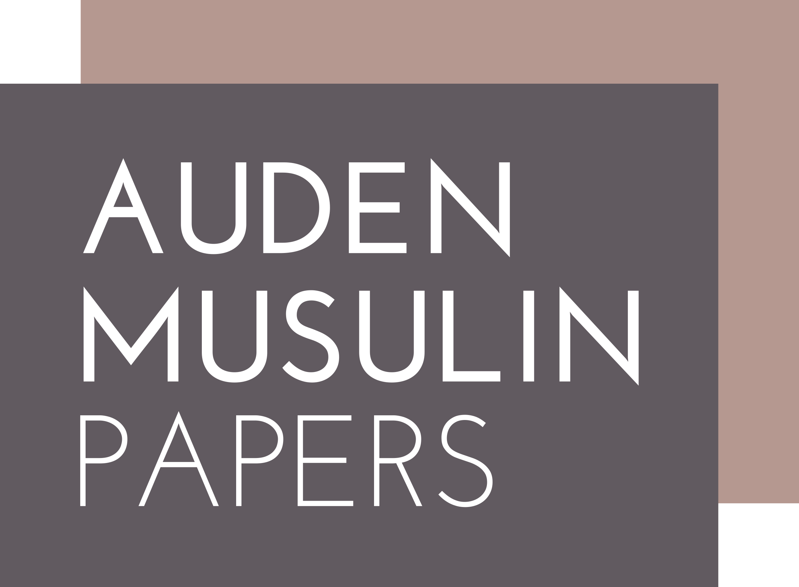

Life Narrative and the Digital 2023:
Interdisciplinary Conference and Workshop
26-27 September 2023
Austrian Centre for Digital Humanities and Cultural Heritage,
Austrian Academy of Sciences, Vienna
Program (tentative)
Tuesday, 26 September 2023
| GMT+02/CEST | ID | Workshop Paper | Author(s) |
|---|---|---|---|
| 09:15-10:45 | Session 1 | ||
| W1 | Modeling Uncertainty in the Auden Musulin Papers | Massimiliano Carloni, Daniel Elsner, Timo Frühwirth, Dimitra Grigoriou, Sandra Mayer | |
| W2 | People Seen from Afar: Data Labelling Practices in Royal Accounts | Marija Blašković | |
| 10:45-11:15 | Coffee break | ||
| 11:15-12:45 | Session 2 | ||
| W3 | Project WARLUX: Biographical Analysis of Luxembourgish Soldiers in WWII Using nodegoat as a relational database | Nina Janz | |
| W4 | Finding Aids and Networked Biography | Katherine Parsons | |
| 12:45-13:45 | Lunch break | ||
| 13:45-15:15 | Session 3 | ||
| W5 | Enhancing Narratives in Digital Humanities: Harnessing the Capabilities of Semantic Story Maps | Valentina Bartalesi, Emanuele Lenzi, Nicolò Pratelli | |
| W6 | Digital Humanities and Life Writing: A case study of deep mapping Amsterdam diaries and letters | Janna Aerts | |
| 15:15-15:45 | Coffee break | ||
| 15:45-17:15 | Session 4 | ||
| W8 | Networks of the Unseen – A Church and its Village | John R. Decker | |
| W7 | (Re)Locating African Entrepreneurs in the Digital Archives of Capitalism | Chambi Chachage | |
Wednesday, 27 September 2023
| GMT+02/CEST | ID | Short Title | Author(s) |
|---|---|---|---|
| 09:15-10:45 | Life Narrative and Social Media(Chair: Julia Lajta-Novak) | ||
| C1 | Live/Life Streaming: Tracing 'auto/biography' in Contemporary Young Muslim Student's Vlogs | Shabnur Parveen | |
| C2 | Digital Platforms and Participatory Narratives: Unveiling the Influence of Social Media on Heritagization | Khaoula Stiti, Lise Renaud, Samia Ben Rajeb | |
| C3 | Digital Life Narratives: Romanian Queer Microcelebrities between Predetermined Scenarios and Online Personas | Alexandra Cotoc, Anamaria Viorica Radu | |
| 10:45-11:05 | Coffee break | ||
| 11:05-12:35 | Life Narrative through Databases and Corpora(Chair: tba) | ||
| C4 | Navigating the Methodological Complexities: Building a Diary Text Corpus | Sanita Reinsone, Haralds Matulis, Ilze Ļaksa-Timinska | |
| C5 | A Digital Survey of Biography in Turkish: Interpreting “Lives in Turkish” Database via Cases | Ceyda Elgül | |
| C6 | Arabic self-expression in pre-modern Iberia: a comparative framework to trace its evolution | Laila M. Jreis-Navarro | |
| 12:35-13:45 | Lunch break | ||
| 13:45-14:45 | Life Narrative and Game Studies(Chair: Eugen Pfister) | ||
| C7 | Playing Holocaust? Immersion and historical narrative in Anne Frank House VR (2018) and Through the Darkest of Times (2020) | Lisa Ingermann, Maike Rettmann | |
| C8 | The case of Dys4ia. A playable autobiography? | Felix Tenhaef | |
| 14:45-15:00 | Short break | ||
| 15:00-16:00 | Life Narrative and Cultural Heritage(Chair: tba) | ||
| C9 | ECHOES of the past: recreating lost soundscapes for a digital touring experience in the Old Town of Xanthi, Greece | Despoina Tsiafaki, Natasa Michailidou, Dimitris Kalogiannidis, Melpomeni Karta, Akrivi Katifori, Katerina Servi, Maria Boile, Yannis Ioannidis | |
| C10 | Narrating through data: life and relationships of a XIV century's Tuscan merchant | Alessia Spadi, Emiliano Degl'Innocenti, Federica Spinelli | |
| 16:00-16:20 | Coffee break | ||
| 16:20-17:20 | Life Narrative through Time and Space(Chair: Kevin Potter) | ||
| C11 | Unsettling Narratives: Rose Daniels, Indentured Servitude, and the Creation of an American Symbol | Erika M Bsumek | |
| C12 | Digital Humanities in the US/Mexico Borderlands: Activism, Literature, and the Lives of Border Crossers | Martin Camps | |
| 17:20-17:30 | Short break | ||
| 17:30-18:30 | Roundtable: Life Narrative and the Digital (Chair: tba) | Anja Grebe, Caitríona Ní Dhúill, Anna Spitzbart, Christian Wachter, Florian Windhager | |


#DigitalBio2023

Auden Musulin Papers (FWF Grant P 33754)